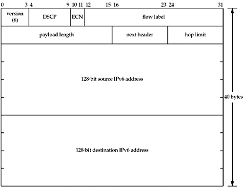

A.3 IPv6 Header
Figure A.2 shows the format of an IPv6 header (RFC 2460 [Deering and Hinden 1998]).

The 4-bit version field is 6. Since this field occupies the first 4 bits of the first byte of the header (just like the IPv4 version, Figure A.1), it allows a receiving IP stack to differentiate between the two versions. This differentiation is already done by most link layers by using different encapsulation for IPv4 and IPv6. During the development of IPv6 in the early 1990s, before the version number of 6 was assigned, the protocol was called IPng, for "IP next generation." You may still encounter references to IPng. The 6-bit DSCP field (RFC 2474 [Nichols et al. 1998]) and the 2-bit ECN field (RFC 3168 [Ramakrishnan, Floyd, and Black 2001]) replace the historical 8-bit traffic class field, which was described in RFC 2460. We can set all 8 bits of this field with the IPV6_TCLASS socket option (Section 22.8), although the kernel may overwrite any value we set to enforce Diffserv policy or implement ECN. The 20-bit flow label field can be chosen by the application or kernel for a given socket. A flow is a sequence of packets from a particular source to a particular destination for which the source desires special handling by intervening routers. For a given flow, once the flow label is chosen by the source, it does not change. A flow label of 0 (the default) identifies packets that do not belong to a flow. The flow label does not change while flowing through the network. [Rajahalme et al. 2003] describes the usage of the flow label more completely. The interface for the flow label is yet to be completely defined. The sin6_flowinfo member of the sockaddr_in6 socket address structure (Figure 3.4) is reserved for future use. Some systems copy the lower 28 bits from the sin6_flowinfo directly into the IPv6 packet header, overwriting the DSCP and ECN fields. The 16-bit payload length field is the length in bytes of everything following the 40-byte IPv6 header. Note that unlike IPv4, the payload length field does not include the IPv6 header. A value of 0 means the length requires more than 16 bits to describe and is contained in a jumbo payload option (Figure 27.9). This is called a jumbogram. The 8-bit next header field is similar to the IPv4 protocol field. Indeed, when the upper layer protocol is basically unchanged from IPv4 to IPv6, the same values are used, such as 6 for TCP and 17 for UDP. There were so many changes from ICMPv4 to ICMPv6 that the latter was assigned a new value of 58. An IPv6 datagram can have numerous headers following the 40-byte IPv6 header. That is why the field is called the "next header" and not the "protocol." The 8-bit hop limit field is similar to the IPv4 TTL field. The hop limit is decremented by 1 each time a router forwards the datagram and the datagram is discarded by any router that decrements the value to 0. The default value for this field can be set and fetched with the IPV6_UNICAST_HOPS and IPV6_MULTICAST_HOPS (Sections 7.8 and 21.6) socket options. The IPV6_HOPLIMIT socket option also lets us set this field and the IPV6_RECVHOPLIMIT socket option lets us obtain its value from a received datagram. Early specifications of IPv4 had routers decrement the TTL by either one or the number of seconds that the router held the datagram, whichever was greater. Hence the name "time-to-live." In reality, however, the field was always decremented by one. IPv6 calls for its hop limit field to always be decremented by one, hence the name change from IPv4.
The source IPv6 address and the destination IPv6 address are both 128-bit fields.
The most significant change from IPv4 to IPv6 is, of course, the larger IPv6 address fields. Another change is simplifying the IPv6 header as follows, to facilitate faster processing as a datagram traverses the network:
There is no IPv6 header length field since the IPv6 header length is fixed at 40 bytes. Optional headers may follow the fixed 40-byte IPv6 header, but each of these has its own length field. The two IPv6 addresses end up aligned on a 64-bit boundary when the header itself is 64-bit aligned. This can speed up processing on 64-bit architectures. IPv4 addresses are only 32-bit aligned in a 64-bit aligned IPv4 header. There are no fragmentation fields in the IPv6 header because there is a separate fragmentation header for this purpose. This design decision was made because fragmentation is the exception, and exceptions should not slow down normal processing. The IPv6 header does not include its own checksum. This is because all the upper layers—TCP, UDP, and ICMPv6—have their own checksum that includes the upper-layer header, the upper-layer data, and the following fields from the IPv6 header: IPv6 source address, IPv6 destination address, payload length, and next header (RFC 2460 [Deering and Hinden 1998]). By omitting the checksum from the header, routers that forward the datagram need not recalculate a header checksum after they modify the hop limit. Again, speed of forwarding by routers is the key point.
In case this is your first encounter with IPv6, we also note the following major differences from IPv4 to IPv6:
There is no broadcasting with IPv6 (Chapter 20). Multicasting (Chapter 21), which is optional with IPv4, is mandatory with IPv6. The case of sending to all systems on a subnet is handled with the all-nodes multicast group. IPv6 routers do not fragment packets they forward. If fragmentation is required, the router drops the packet and sends an ICMPv6 error (Section A.6). Fragmentation is performed only by the originating host with IPv6. IPv6 requires support for path MTU discovery (Section 2.11). Technically, this support is optional and could be omitted from minimal implementations such as bootstrap loaders, but if a node does not implement this feature, it must not send datagrams larger than the IPv6 minimum link MTU (1280 bytes). Section 22.9 describes socket options to control path MTU discovery behavior. IPv6 requires support for authentication and security options. These options appear after the fixed header.
|